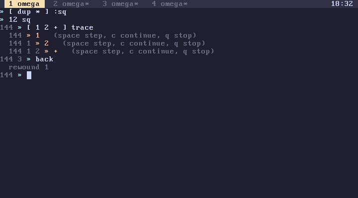

subverge
subvergeback
- Using it
- Which lines count
- The rest of the line is discarded
- redo
- What back restores
- Rewinding and saving
- Cost
- back and the Up arrow
back undoes the last line that changed your tab's world: its stack and its definitions. Each tab remembers the 64 most recent changes, so up to 64 lines can be undone.

Using it
Type back on a line of its own:
1 2 » 3
1 2 3 » [ dup dup * * ] :cube
1 2 3 » back
rewound 1
1 2 3 »
cube is gone, and the stack is what it was before the line that defined it. Typing back again would also remove the 3.
back is a word like any other, so several can go on one line:
back back back
rewinds three lines and prints rewound 3. If fewer lines are recorded than requested, it rewinds as many as it can. With nothing recorded it prints there is nothing to go back to.
Which lines count
Only lines that changed the stack or the definitions are recorded. A line that only printed something, such as words, help or "hi" say, leaves the world exactly as it was, so it isn't recorded and back skips over it. A failed line never changed the world in the first place (transactions), so it isn't recorded either.
This means back always undoes something visible. After running top five times and then defining a word, a single back removes the definition.
The rest of the line is discarded
A line that calls back doesn't commit anything else. Whatever else it did to the stack or the definitions is thrown away, and the world is replaced by the older one:
[ 1 ] :x back
doesn't define x, and it rewinds the line before it. Put back on a line of its own unless that is what you want.
Code that calls back inside a definition works the same way, so [ back ] :undo followed by undo rewinds one line.
redo
redo takes a back back:
1 2 » 3
1 2 3 » back
rewound 1
1 2 » redo
redone 1
1 2 3 »
Each back puts the world it leaves onto a redo list, and redo takes worlds off that list again, newest first. redo redo redoes two. Like back, it discards everything else on its line.
Any line that changes the world in a new way clears the redo list, since the worlds on it no longer follow from the current one. With nothing to redo, redo prints nothing to redo. A line with both back and redo only goes back.
The redo list holds up to 64 worlds and isn't saved to disk, so it is empty after a reboot.
What back restores
back restores exactly what a transaction protects: the stack and the tab's definitions. These are outside its reach:
- Root. Root edits are separate and have their own rule for failures (root). To undo a root edit, open the unit and change it back.
- Other tabs. Each tab has its own history, and
backin one tab never affects another. - The machine. Memory written with
poke, ports written without,alloc, the screen, the tab title and the clock are changed the moment the word runs.backdoesn't put them back. - Printed text stays on the screen.
Rewinding and saving
On an installed disk, a rewind is saved like any other change, so the world on disk after back is the older one (saving). The history itself isn't saved. After a reboot each tab starts with an empty history, and the first back prints there is nothing to go back to.
Cost
Rewinding is instant regardless of how much is defined. A world is only a pointer to a stack and a pointer to the head of a dictionary, and old worlds share almost all of their entries with new ones, so keeping 64 of them takes little memory. See how worlds work.
back and the Up arrow
The Up arrow at the prompt recalls the text of an earlier line. back undoes the effect of one. To fix a mistaken definition, back it, press Up twice to get the line back, edit it and press Enter.